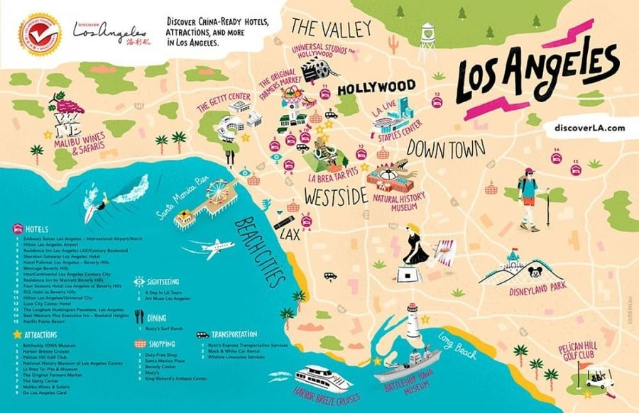
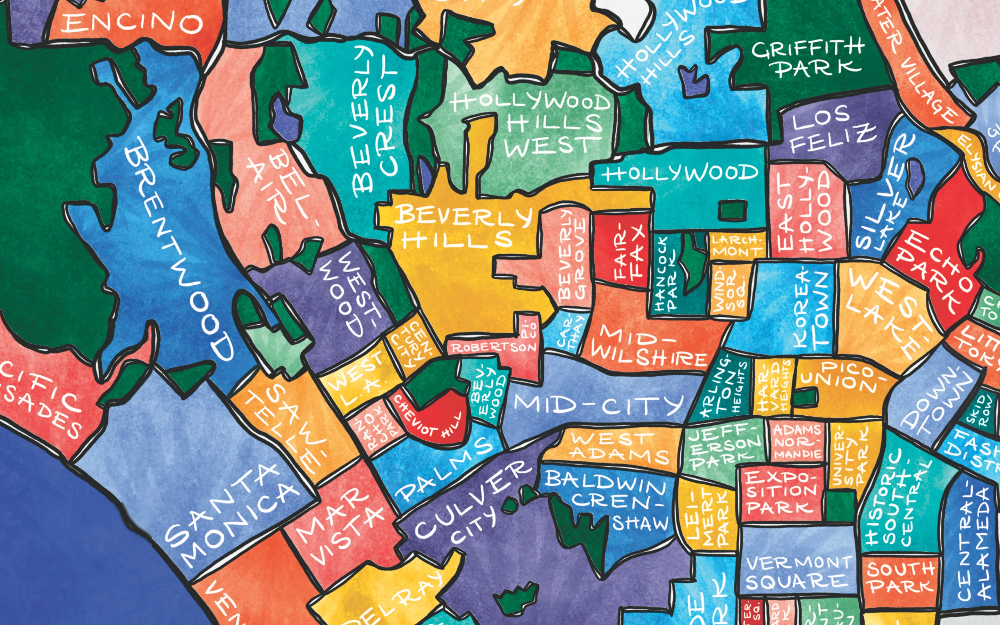

Discover the Best of Los Angeles
Los Angeles is filled with diverse attractions, cultural landmarks, and outdoor activities. Whether you're exploring iconic sights like the Hollywood Walk of Fame, soaking in the sun at Santa Monica Beach, or discovering the artsy neighborhoods of Downtown, LA offers something for everyone. Dive into this guide to uncover the top places to visit, explore neighborhoods, and make the most of your stay in the City of Angels.
Featured Attractions
Local Maps of the City


Neighborhoods to Explore
Explore famous Tourist routes